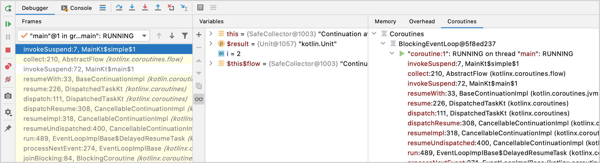
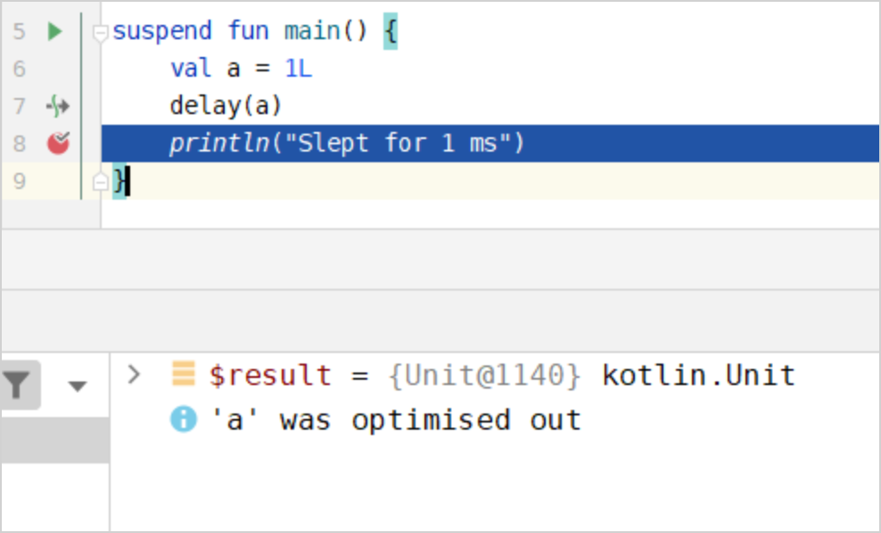

创建一个 Flow，在发射和收集的位置打断点，然后观察加入缓冲前后，调试器里有哪些协程。
先熟悉协程与 Flow 的基本概念，再进行本次实验。 coroutines · flow
创建一条 Flow
让生产值和消费值两边都有等待，以便看清两边的节奏。 flow
在 IntelliJ IDEA 中打开 Kotlin 项目，或先新建一个。 create one
-
如果使用 Gradle，在
build.gradle(.kts)中加入下面的kotlinx.coroutines依赖。Kotlin
dependencies { implementation("org.jetbrains.kotlinx:kotlinx-coroutines-core:1.11.0") }Groovy
dependencies { implementation 'org.jetbrains.kotlinx:kotlinx-coroutines-core:1.11.0' }其他构建工具的配置见 kotlinx.coroutines README。
-
打开
src/main/kotlin下的Main.kt。src目录存放源码和资源。新建项目中的Main.kt通常带有打印Hello World!的示例。 -
定义
simple()，让它返回依次提供三个整数的 Flow。import kotlinx.coroutines.* import kotlinx.coroutines.flow.* import kotlin.system.* fun simple(): Flow<Int> = flow { for (i in 1..3) { delay(100) emit(i) } } -
再修改
main()，加入收集逻辑。用 runBlocking() 承载这次实验。
调用 collect() 收集发射的值。
收到值后用 delay() 挂起 300 毫秒，模拟较慢的处理过程。这段等待会释放线程。
用 println() 打印收到的值。
fun main() = runBlocking { simple() .collect { value -> delay(300) println(value) } } -
选择 Build Project 构建项目。

调试单个协程
-
在
emit()所在行设置断点。
-
点击窗口顶部运行配置旁的 Debug，以调试模式启动。

程序暂停后，查看 Debug 工具窗口。
Frames 标签显示调用栈。
Variables 标签给出当前变量，可以看到 Flow 正准备发射第一个值。
Coroutines 标签显示运行或挂起的协程。

-
点击 Debug 窗口里的 Resume Program。下一轮循环还会在同一行暂停。

此时再看变量，生产者准备发射第二个值。

看不到某个变量时
在挂起函数里，有时会看到变量名旁写着 was optimized out。

这表示编译器缩短了变量的存活期，此时已经取不到它。教程给出的调试办法是使用编译器选项 -Xdebug，以保留更多变量信息。
加入并发执行的协程
打开
src/main/kotlin下的Main.kt。-
调整下面这一处，让发射方和收集方可以并发推进。
在流上加入 buffer()。它在上、下游之间保存已经发射的值，使发射和收集可以分别在两个协程里推进。
fun main() = runBlocking<Unit> { simple() .buffer() .collect { value -> delay(300) println(value) } } 选择 Build Project 构建项目。
调试有两个协程的 Flow
保留原断点，再在
println(value)设置一个断点。-
点击窗口顶部运行配置旁的 Debug，以调试模式启动。

打开 Debug 工具窗口。
在截图对应的断点，
buffer()把上游生产和下游收集分到了不同协程。Coroutines 中能看到发射方为 RUNNING，收集方为 SUSPENDED；它们通过缓冲区交接元素。 -
点击 Debug 工具窗口中的 Resume Program。

这次暂停时收集方变为 RUNNING，发射方显示为 SUSPENDED。结合断点位置理解这次快照。
逐个展开协程，可以沿各自的调用栈继续排查代码。